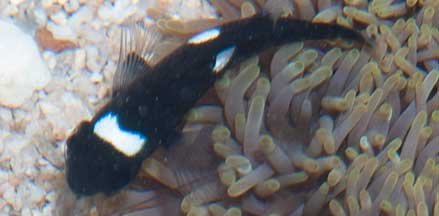
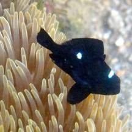

|
|
| fishes text index | photo index |
| Phylum Chordata > Subphylum Vertebrata > fishes > Family Pomacentridae |
| Three-spot
dascyllus Dascyllus trimaculatus Family Pomacentridae updated Oct 2020 Where seen? This black anemonefish with white spots is sometimes seen on our submerged reefs, living in a Giant carpet anemone, often sharing the anemone with Peacock anemoneshrimps. Elsewhere, juveniles are often seen living in large sea anemones, sea urchins, or branching corals. Adults found in pairs or small groups around coral mounds or rocks. Features: To 11cm. Juveniles are jet black with white blotch on forehead and on the sides near the upperside of the body. As they age, the spots fade. Adults are greyish with variable 'spottiness', some with no spot on forehead; or very reduced side spot. |
 Often seen together with Peacock anemoneshrimps. Terumbu Selegie, Jun 11 |
 Terumbu Selegie, Jun 11 |
| What does it eat? It feeds on
algae, copepods, and other planktonic crustaceans. Human uses: Unfortunately, these fishes are taken from the wild for the aquarium trade. The harvest may involve the use of cyanide or blasting, which damage the habitat and kill many other creatures. Like other fish and creatures harvested from the wild, most die before they can reach the retailers. Without professional care, most die soon after they are sold. Often of starvation as owners are unable to provide the small creatures and plants that these fishes need to survive. In artificial conditions, many succumb to diseases and poor health. Those that do survive are unlikely to breed. |
| Three-spot dascyllus on Singapore shores |
On wildsingapore
flickr
|
| Other sightings on Singapore shores |
 Juvenile fish in Giant carpet anemone Cyrene Reef, May 11 Photo shared by Loh Kok Sheng on his blog. |
|
Dascyllus anemonefish found at Cyrene Reef! from Loh Kok Sheng on Vimeo. |
|
Dascyllus anemonefish (Dascyllus trimaculatus) from Loh Kok Sheng on Vimeo. |
Links
References
|